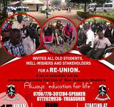
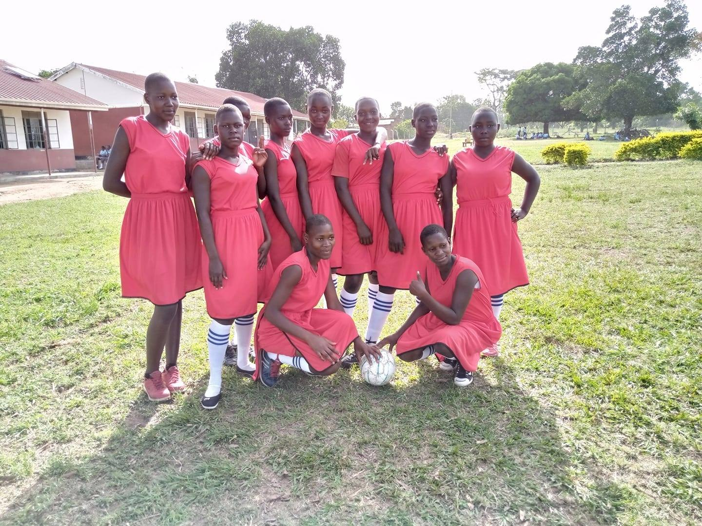
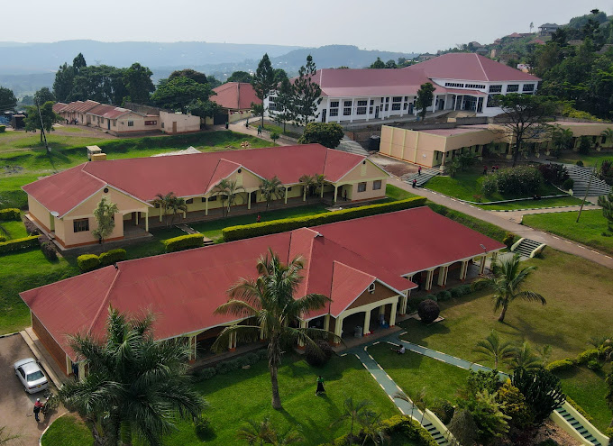

MINJO BEN
21/U/15758/PS
2100715758
Schools
Hobbies
Work Experience
Makerere University 2024
Kisiki College 2019- 2022

St .Mathias S School 2014-2018

Kategere PRI School 2010-2014

WORK EXPERIENCE
Management of library information at parliament libraty , ensuring accuracy and confidentiality.
Organising and maintaining the filing system for quick retrieval of documents.
Collaboration with healthcare professionals at wiki sourceto ensure proper documentation practices.
CAREER PROSPECTS
Gain practical experience in information management and document control.
Aspire to be a leader or expert in library and information science, contributing to more efficient information management processes.
Become a specialist or leader in information management, promoting innovation and best practices in the field.
HOBBIES
Motivational talks with fellows.
cataloguing and classification.
Making Exercises.